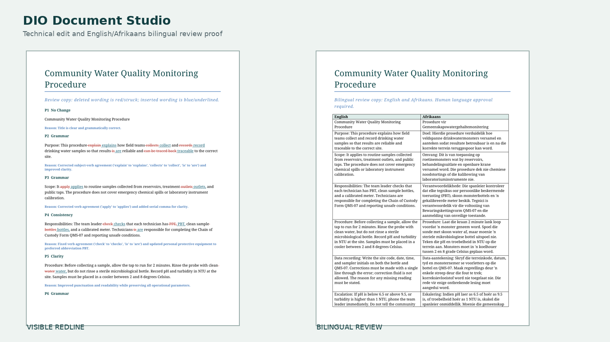

Technical Edit
Improve correctness, clarity, consistency and usability without changing the document's facts or authority.
- Clean edited DOCX and PDF
- Visible redline review copy
- Change ledger and rationale
- Terminology and QA report
Professional document production
Send an authorised, text-readable document. Receive a clean copy, visible corrections, controlled terminology, and a bilingual review pack prepared for human approval.
Certified, sworn, legal and safety-critical release requires an appropriately qualified human professional.
Choose the document route
Suitable initial pilots include policies, reports, manuals, procedures, training material, proposals and institutional communications. Complex designed layouts are scoped separately.
Improve correctness, clarity, consistency and usability without changing the document's facts or authority.
Translate an approved source with protected terminology, paragraph alignment and a complete bilingual review surface.
Correct the source first, freeze its operational meaning, then translate from that controlled version.
South African language desk
Each route uses canonical language identifiers, protected terminology and a named reviewer requirement. Afrikaans has a golden review candidate; the three African-language routes are configured candidates awaiting proficient reviewer validation.
DIO Lingua + BEAST
Lingua stores a versioned semantic object rather than four disconnected files. When one source unit changes, only its aligned translations become stale. BEAST remembers deterministic safeguards and recurring review risks automatically; approved terminology and wording become reusable only after linguistic authority.
Golden review candidate
The proof takes a deliberately faulty community water-quality procedure through English technical editing and Afrikaans translation. It preserves pH, NTU, QMS-07, temperatures and escalation thresholds.

Synthetic controlled proof. No client document or confidential information is shown.
The production route
The model prepares candidate language. Validation protects anchors, numbers and controlled tokens. Humans decide whether the technical meaning and translation are fit for release.
Confirm document type, languages, authority, word count and deadline.
Receive the document privately with the style guide and terminology list.
Edit, translate and build aligned review artifacts.
Technical and target-language reviewers resolve every flagged decision.
The client approves the final wording and delivery pack.
Professional boundary
This creates a DIO lead only. Do not attach confidential material yet; the private intake route follows qualification.